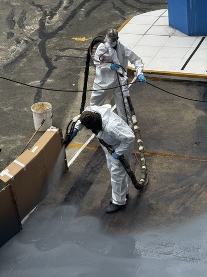
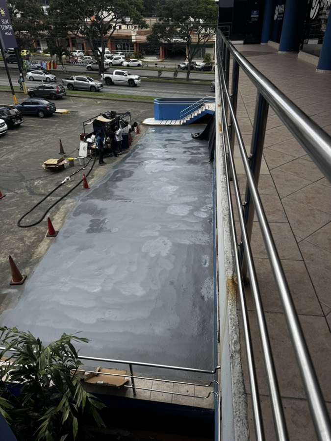
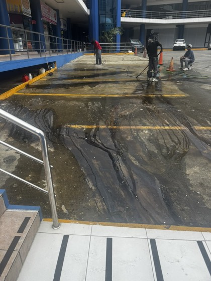
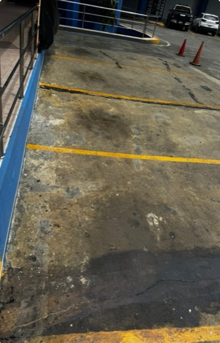
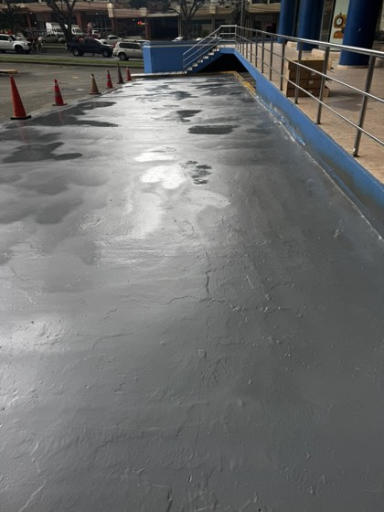
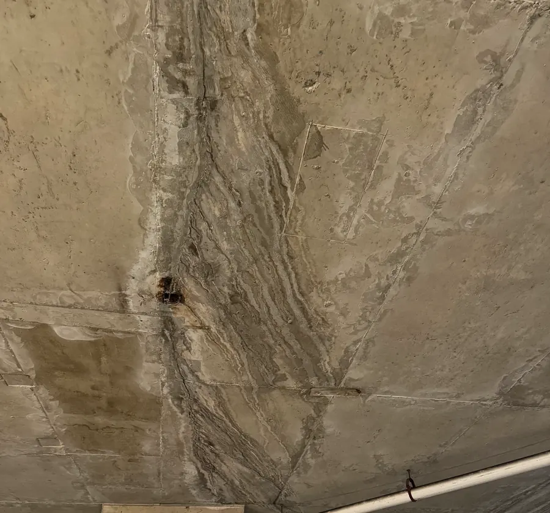
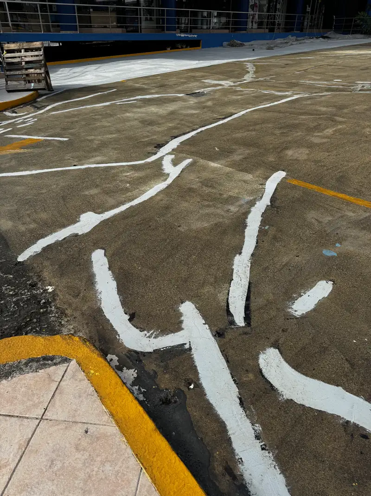
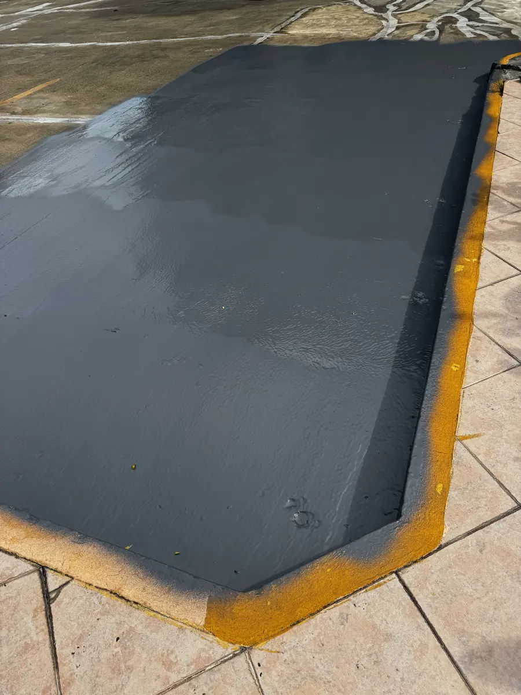
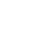

Impermeabilización · Panamá
Membrana continua.
Cero juntas.
Cero filtraciones.
Si su losa filtra, las juntas suelen ser el punto débil. Membrana continua de poliurea, aplicada por tramos y sin cerrar el nivel.
La filtración no se veía. Se sentía en cada lluvia.
130 m² de losa de estacionamiento con filtración activa hacia niveles inferiores. Sellados con membrana continua de poliurea en un día, sin cerrar el nivel.





El mismo estacionamiento, por tramos. Las fisuras se tratan antes de colocar la membrana.



La poliurea en cifras, no en discurso.
Valores de la ficha técnica del sistema de poliurea en caliente. Pida la ficha completa por WhatsApp.
El sistema se elige por la superficie.
La poliurea es nuestro sistema principal. También aplicamos otros cuando la superficie o el uso lo piden. En el diagnóstico sin costo le recomendamos el que corresponde.

Poliurea en caliente · sistema principalMembrana continua aplicada por proyección, sin juntas. Para losas, techos, estacionamientos y pisos industriales.
Ver detallePoliurea en frío
Membrana de poliurea de aplicación en frío. Para terrazas, balcones, techos metálicos y zonas húmedas.
Ver detallePoliuretano
Revestimiento líquido elástico y transitable, apto para tráfico pesado. También sirve para rehabilitar sin demoler sobre cerámica.
Ver detalleAcrílico
Membrana a base de agua, resistente al estancamiento. Para azoteas, terrazas y techos, con refuerzo en fisuras y puntos críticos.
Ver detallePolímero MS
Revestimiento elástico para reparar filtraciones, juntas de tejados, canalones y entradas de tuberías.
Ver detalleCementicio
Revestimiento a base de cemento y polímeros. Para baños, terrazas y depósitos de agua.
Ver detalleLa poliurea no siempre es la respuesta. Se lo decimos en el diagnóstico.
Tres pasos. Ningún precio de catálogo.
El costo depende del sustrato, el acceso y el área real. Por eso cada proyecto se cotiza por separado, nunca por tabla.
Nos escribe o nos deja sus datos
Comparta el tipo de superficie, el área aproximada y el problema que enfrenta, por WhatsApp o en el formulario. Sin costo.
Evaluamos su caso
Con esa información —o una visita técnica si el proyecto lo requiere— calculamos el precio real según sustrato y acceso.
Recibe su cotización
Precio por proyecto, garantía por escrito y fecha de aplicación, todo por escrito.
Antes de escribirnos.
Si su duda no está aquí, escríbala directo por WhatsApp. Responde un técnico, no un bot.
Describa su superficie en un mensaje. Le decimos si la poliurea corresponde — y si no, también.
Consulte su caso¿El diagnóstico tiene costo?
+
No. Evaluamos su superficie y entregamos un diagnóstico técnico sin costo ni compromiso antes de cotizar.
¿Cuánto cuesta impermeabilizar mi techo?
+
No hay un precio por metro cuadrado que sirva para todos los casos. El costo depende del sustrato, del área real, del acceso y del estado en que esté la superficie: dos losas del mismo tamaño pueden costar distinto. Escríbanos con el tipo de superficie, el área aproximada y una foto si la tiene. El diagnóstico es sin costo y con eso le damos el precio de su caso.
¿Cuánto tiempo toma la aplicación?
+
La poliurea en caliente alcanza el gel en 45 segundos o menos, por lo que se aplica por tramos. Según la ficha del fabricante, la superficie no debe recibir carga ni apilamiento durante las primeras 24 horas. En los demás sistemas los tiempos son otros y se los indicamos en el diagnóstico sin costo.
¿Debo detener mis operaciones?
+
Con poliurea en caliente se aplica por secciones, y cada tramo intervenido debe quedar libre de carga durante las primeras 24 horas. En los demás sistemas se lo indicamos en el diagnóstico.
¿Se puede aplicar con lluvia o humedad?
+
Con poliurea depende del estado de la superficie: el sustrato debe estar suficientemente seco al aplicar, y lo revisamos antes de empezar. Con lluvia intensa no se aplica, por la seguridad de los trabajadores.
¿Resiste el sol directo sin degradarse?
+
El desempeño ante la radiación solar depende del sistema y del acabado. Escríbanos y le indicamos cuál corresponde a su superficie.
¿Funciona sobre cualquier superficie?
+
La poliurea en caliente se adhiere a concreto, metal y la mayoría de sustratos con la imprimación correcta — por eso el diagnóstico revisa el sustrato antes de cotizar.
¿Cómo se elige el sistema de impermeabilización?
+
Depende del sustrato, del uso, de la pendiente y del estado de la superficie. Aplicamos poliurea como sistema principal, y también poliurea en frío, acrílico, poliuretano, polímero MS y cementicio. En el diagnóstico sin costo le recomendamos el que corresponde, aunque no sea la poliurea.
¿Cómo sé si la filtración viene de la losa o de una tubería?
+
Una filtración de losa suele aparecer o aumentar con la lluvia, mientras que la de una tubería también aparece en días secos. Envíenos una foto de la mancha y del techo; en el diagnóstico sin costo confirmamos el origen antes de cotizar.
¿Qué cubre la garantía?
+
La garantía se entrega por escrito y cubre los defectos de aplicación de la membrana. No cubre fuerza mayor, perforaciones o intervenciones posteriores, ni filtraciones que se originen fuera del área intervenida, como fisuración estructural o acumulación de agua por falta de pendiente.
¿Qué pasa si vuelve a filtrar?
+
Nos avisa por escrito y revisamos en sitio para determinar el origen. Si es un defecto de aplicación, se corrige sin costo, conforme a los términos de la garantía escrita. Si el origen es ajeno a lo contratado, se lo informamos por escrito con el sustento y cotizamos la solución aparte, sin cobrar la inspección.
¿Qué zonas atienden?
+
Atendemos Ciudad de Panamá, la Provincia de Panamá, Panamá Oeste y Colón. Si su proyecto está en otra zona, escríbanos y evaluamos cada caso.
Déjenos sus datos.
Si no quiere escribir por WhatsApp, deje su nombre y su teléfono y le respondemos en horario de oficina. El diagnóstico es sin costo.
Cuéntenos de su proyecto.
Envíe su ubicación, el área aproximada y una foto si la tiene a la mano. Le decimos qué sistema corresponde y qué no.